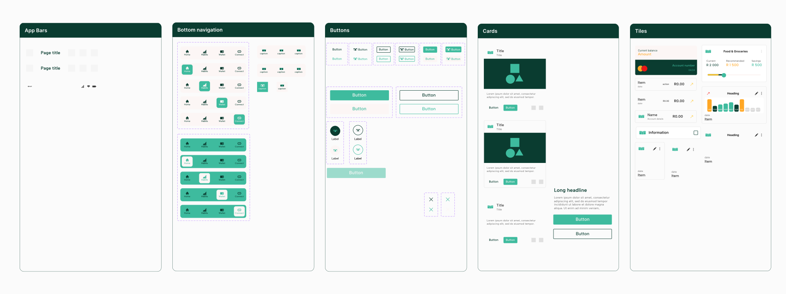
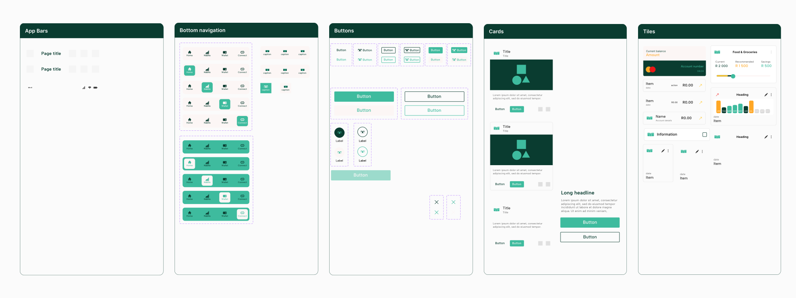

Young people who have recently transitioned to the working environment the work, looking for a cheaper online banking alternative. The main challenge was to create a user-friendly interface that effectively communicates the FSP's goals while ensuring a seamless user experience. The design needed to be modern and appealing to the target audience, while also being functional and easy to navigate.
A new banking app that helps you professionals bank smart, using features that promote financial literacy and budgeting. The design incorporates a modern aesthetic with a focus on usability. The solution involved designing a clean and intuitive interface that guides users through the app's features.


The process to design a solution quickly includes first laying out the known. Most banking app user flows are similar and research is available for common customer needs. Getting past the unknown is where crafting the design begins. Ideating in a team is key but also being able to go at it alone is possible with a benchmark activity and looking outside of the scope.
The research phase involved gathering insights into user needs, market trends and emerging technologies. This included benchnmarking & competitive analysis to inform the design direction.

Ideation included translating research findings into actionable design concepts. This involved a fusion of brainstorming sessions and wireframe sketching, and creating user flows to visualize the app's structure and functionality.

The filnal design phase involved creating a visual treatment, high-fidelity mockups and interactive prototypes. This included designing the user interface components with a focus on usability, scalability and accessibility.
 



Here's a glimpse of some of my work. Each project is designed with strategy, creativity, and user experience in mind.


I'm always open to discussing new projects, creative ideas, or opportunities to be part of your vision.
Thokozani Tshabalala